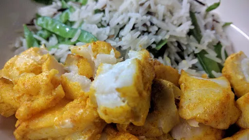

Spiced cod

Servings: 4
Total: 20 mins
Ingredients
Sauce
- 1 clove garlic
- ½ red onion
- ½ tsp turmeric
- 1 tbsp greshly grated ginger
- ½ fat red chilli, deseeded and chopped
- 2 tsp fish sauce
- 1 tbsp olive oil
- 600 g cod fillets, cut into bitesized pieces
- 1 tbsp freshly chopped coriander
- 1½ mugs basmati rice
- 200 g mangetout
- 2 tbsp toasted flaked almonds (optional)
Instructions
- Put the sauce ingredients in a blender and blitz.
- Put the
fish600 g
in an oven proof dish and pour over the sauce. Season with salt and pepper and leave to marinade for about 30 minutes. Meanwhile, cook the rice.
- Preheat the grill and place the
fish600 g
under the grill for about 5 minutes on a high heat.
- Slice the
mangetout200 g
lengthways into thin strips, add to the rice pan and leave to simmer for a further 2 minutes. Add the almonds2 tbsp
and mix together. Serve with the fish600 g
.
Nosh for graduates
Short Link
Long Link